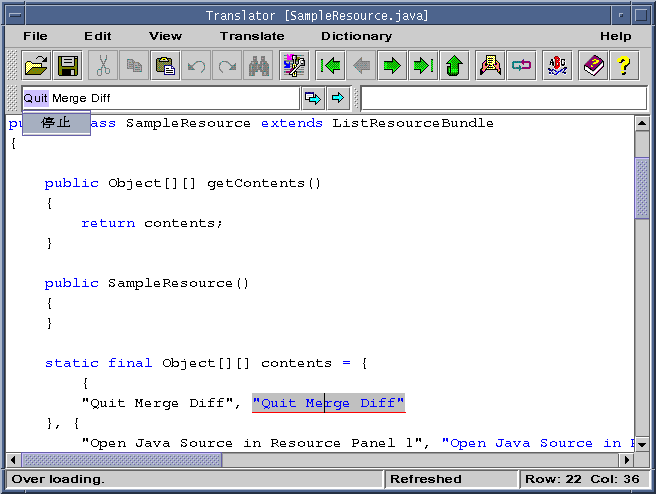
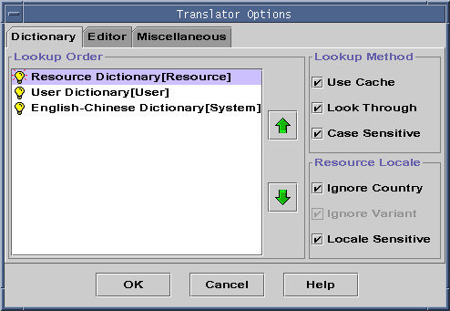
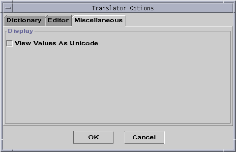
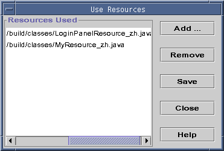
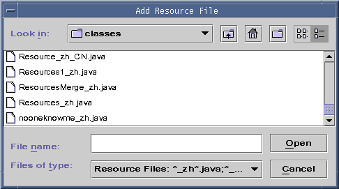
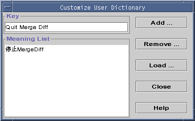
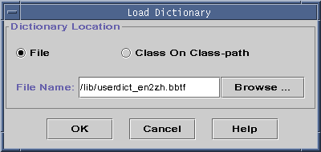
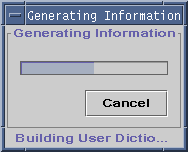
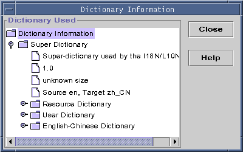

Translator

[contents]
Introducing the Translator
Using the Translator
Translator Command-line
Introducing
the Translator
Translator helps in an important part of localization, that is translation.
It searches for strings that need translation in Java resource bundle files
(either class file or source file) and translates them into the target
language, for example, Chinese. You can use the provided dictionary or
resource bundle files (either class file or source file) as dictionaries
for the translating work. You can also install and use you own dictionary
if you provide an implementation of the interface bridging between the
dictionary and Translator.
Translator looks for code like the following in ResourceBundle files.
{"Quit Merge Diff", "Quit Merge Diff"}
It automatically marks that value string "Quit Merge Diff"
for translation and suggests a translation if one is available in dictionaries.
Translator includes an English to Simplified Chinese dictionary. If
you want to use another dictionary, the interface, ie. Dictionary,
between that dictionary and the Translator must be implemented. A
developer must have a good working knowledge of the original and target
language locale to make a good translation.
Using the Translator
Getting Started
with the Translator
With GUI mode, in the main window of I18n/L10n Toolkit 2.0, select
Translator,
then you can get Translator window pop-up (figure1). (The file in
Translator is selected from toolkit main window.)
Menus and Buttons
The translator UI includes several buttons and menus. Only ones
that are unique to this tool are described here.

Figure1: Translator main window with a source file loaded
In this main window, the resource bundle file is displayed with keys and
value strings marked. The current value string is also displayed in an
input window top-left above the document editing window. Right click on
it, the translation menu will pop up with the translation of the marked
text in this input window, as shown in figure1.
There are three option items in the window.
The list are the dictionaries currently being used. You can select
and move a dictionary to change their order. The Translator will lookup
keys in each dictionary according to this order.
-
Lookup Method
Checking Use Cache will allow the Translator to enable an internal
cache (with dictionaries's support) for looking up. This will accelerate
the speed of query but use more memories. Checking Look Through
means looking up in all the dictionaries even if a matching has been found
in one of the them; if it is unchecked, the query stops once a matching
is found. The query and matching operation can be adjust to case sensitive
or case insensitive with Case Sensitive checkbox.
There are options to be used to decide whether the country and/or variant
of a locale are used (effective) when loading resource bundles into a resource
dictionary. If using explicit locale, thus using full locale information
to match when loading a resource bundle file into resource dictionary,
if the locale name is different from the system dictionary's, the bundle
file and its content can not be loaded and used in the resource dictionary.
Checking Ignore Country will ignore the difference of locale
country if any as well as variant, in resource bundle file names, when
loading resource bundle files. Checking Ignore Variant will only
ignore the variant difference if any. Locale Sensitive, if checked,
when open a resource bundle file, the Translator will try to switch dictionaries'
target locale to the bundle's locale. "Ignore Country" and "Ignore Variant"
setting can affect the locale sensitive mode.

Figure2: Translator dictionary options
-
Editor
The function of this option is the same as that of Message Tool.
You can find the detail introduction in Edit->Option in Chapter3:
Message Tool.
-
Miscellaneous
Select the display method. If View Value As Unicode box is checked,
the value strings will be displayed in ASCII unicode. You can save the
document in WYSIWYG (What You See Is What You Get) way.

Figure3: Translator miscellaneous options
-
Translate Menu:
This menu realizes the function of translating the opened resource
file.
-
Submit
Change the current value to the locale language using the string in
the top-right text field above the editor window, which shows the selected
translation.
-
Submit&Next
Change the current value to the locale language and highlight the next
string to be translated and show the translation of it to select.
-
Revert
Change the value string to the same as the key string.
-
All
-
Values
The Translator will translate all words in the values using the matching
it found in its dictionaries.
-
Translatable Values
The Translator will translate all words in the values only if the all
matching of the words can be found in its dictionaries.
-
Fully Translatable Values
The Translator will translate values only if it can find a full matching
for one value as a whole in its dictionaries.
-
Revert
Change all the value strings to the same as the key strings.
-
Use Resource
-
Select this menu item you will get the window (figure4).

Figure4: Use resources as dictionary
-
Press Add button and get Add Resource File window (figure5).

Figure5: Add resource bundle files
-
Select a resource bundle file and Open it.
Note: A resource bundle file and its content can be loaded only if its
locale meets the system dictionary target locale and the ignore country
and ignore variant criteria. After the resource file is loaded, its content
can be used as resource dictionary because it is the form of the key value
pairs.
-
Customize
Select this menu item, you will get Customize User Dictionary dialog
box (figure6) . Press Load, then get Open User Dictionary
window (figure7). Here you can select and load a dictionary file or class
to be used as the user dictionary. If the dictionary file or class meets
the system dictionary locale and the ignore country and ignore variant
criteria, this action will be successful.

Figure6: Customize User Dictionary

Figure7: Open User Dictionary
After the customization, the new meaning entered will be valid and
used in the translation candidate list. This is another method to customize
the dictionary.
-
Information
Press this menu then you will get a process dialog box (figure9) on
generating the dictionary information. When the processing is finished,
the Dictionary Information window (figure10) is shown (or Press
Cancel
on the dialog box to terminate the action).

Figure9: Generating dictionary Information

Figure10: Dictionary information
In this window, you can see the detailed information about the dictionaries
used by Translator.
-
Refresh
Refresh will make the keys in the dictionary cache (if enabled) synchronize
with the matching values in dictionaries.
-
Pack
If the internal implementation of dictionaries need packing to save
the storage space, select this menu item. You can pack System Dictionary
making
it more compact, and save its storage space, or pack User Dictionary
making it more compact, and save its storage space.
Translating
A Resource File
-
Select File-Open to open a resource bundle file (either source file
or class file).
-
Once opened, Translator automatically locates the first value string;
the string is displayed in the top-left text field above the editor window.
-
To view the translation, double click the string in the input window (or
mark a string and right click). If there are more possible translation
then can be viewed in a list.
-
When you find the right meaning, select it then it is shown in the right
side text field. If there are more than one translatables in the string,
the Translator automatically locates the next one that needs translation.
-
To copy some text without translation, select the
to copy the selected portion of the string into the target field (right
side). Select to
skip a translation.
-
If there is no appropriate translation provided, complete the translation
by typing directly your own translation text in the target field manually.
-
When the translated strings appears in the target field, select Submit
from menu bar or popup menu.
The highlighted string in the resource file will be replaced by the
translated string. To locates the next string in the resource file to be
translated, select Submit&Next from menu bar or popup menu.
-
To save your work, use File-Save or Save As.
Importing A User Dictionary
Two kinds of user-defined dictionaries can be loaded in the translator,
in Bbtf format or a class which implements com.sun.tdc.toolkit.api.Dictionary
interface.
-
Dictionary file in Bbtf format is a dictionary file in which the keys and
values are stored in internal binary balance tree format.
-
Dictionary class is a bridge class to use a dictionary existed already.
The class should implement com.sun.tdc.toolkit.api.Dictionary
interface. It should be able to found in CLASSPATH.
There is aleady a default blank user dictionary file at "lib/userdict_en2zh_CN.bbtf".
It can be used directly (such as adding new meaning, customizing the meaning
of a word or sentence).
To import a new user dictionary to use, the com.sun.tdc.toolkit.api.Dictionary
interface must be implemented first, and the implementation
must consider other language translation. If there is a need to cache the
dictionary for looking up usage, the com.sun.tdc.toolkit.api.DictionaryCachable
interface should also be implemented. The implementations can be used
as a bridge to connect to any existed dictionaries, even the web dictionary.
That is to say, user can access other dictionaries via implementing the
above interfaces. See the example: SampleDictionary.java
Translator Command-line
The command of Transltor is simple to use.
USAGE:
java com.sun.tdc.toolkit.translator.Translator
<source file> [<output file>]
Top of file | Comments
| Submit Bug
Copyright © 1995-1999 Sun Microsystems, Inc.
China Technical Development Center
All Rights Reserved.